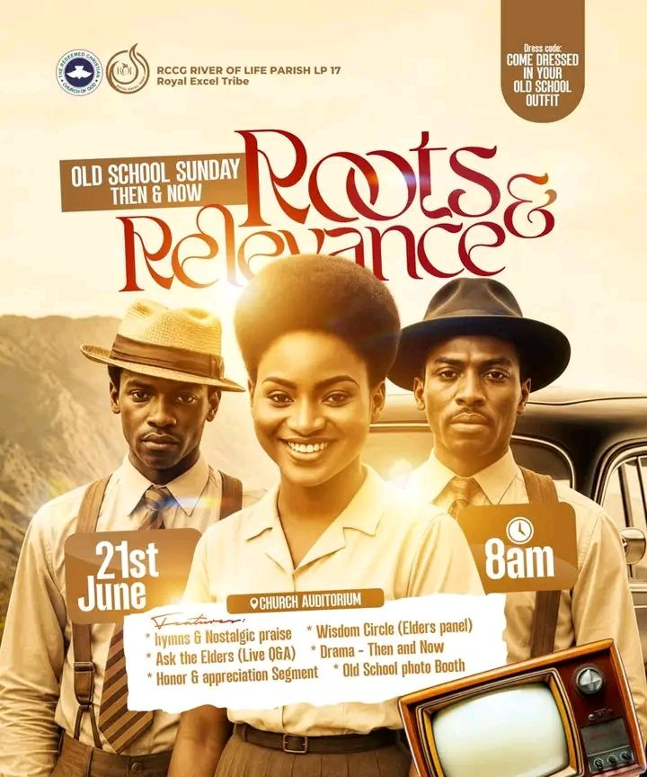
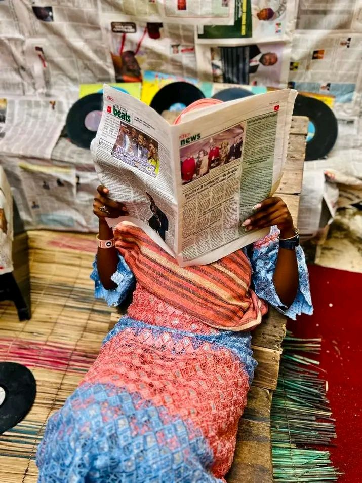
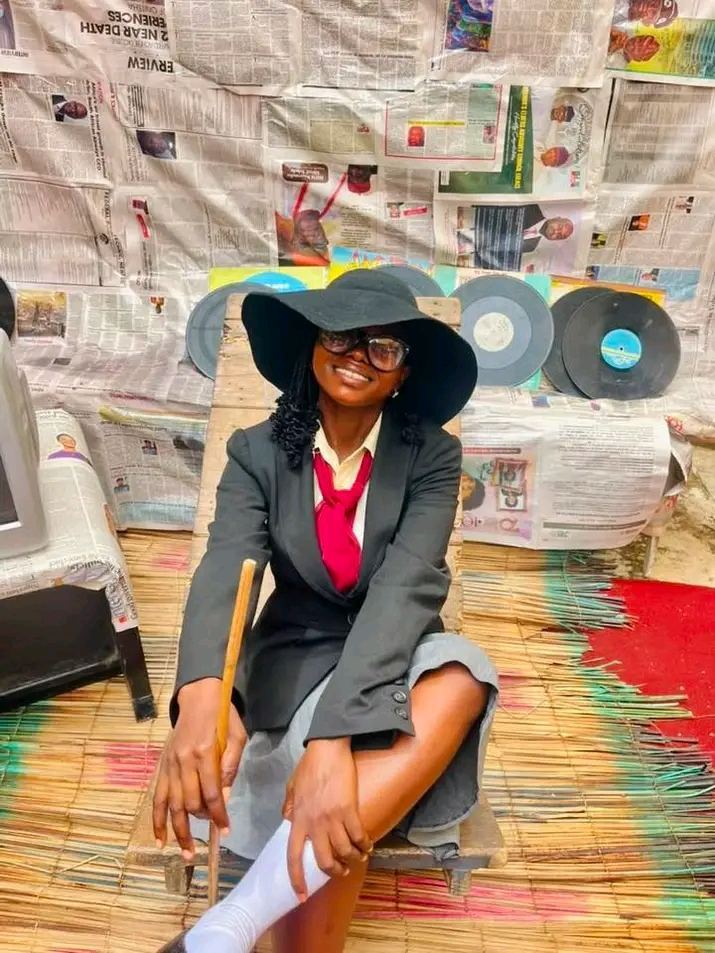
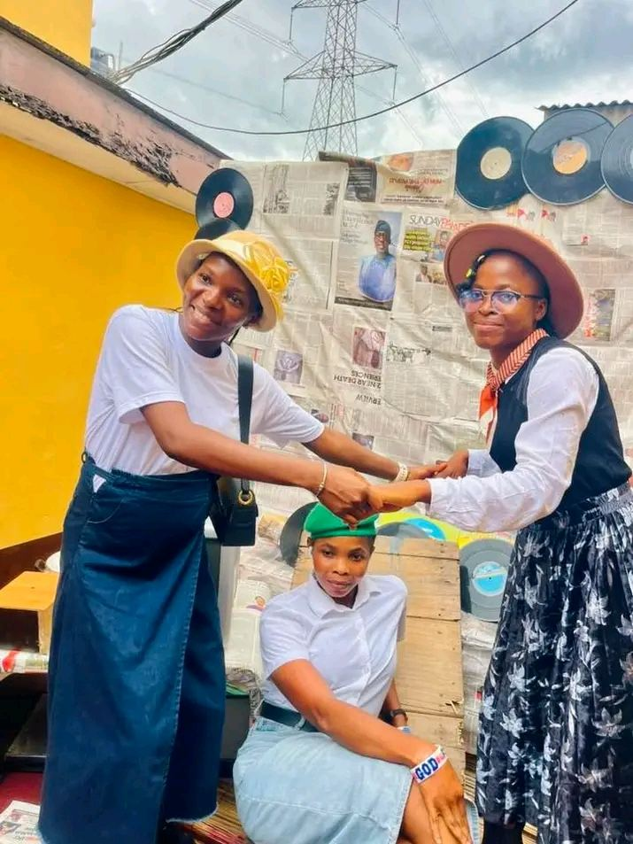
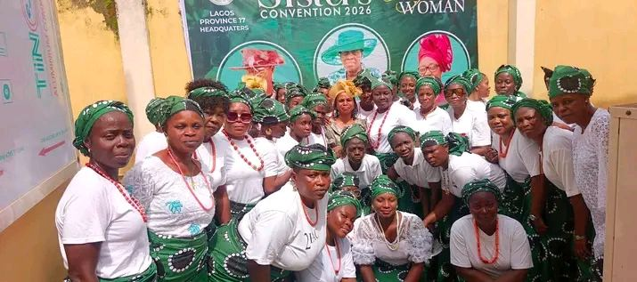

Known for creative fellowship days like Old School Sunday — a community for young professionals navigating faith, career and calling together.
Discipleship and mentorship built for teenagers finding their voice.
Brotherhood, accountability and purpose for the men of the province.
Led by Pst (Mrs) Olufunke Akosile, PICP CSR LP17 — a gathering of support, prayer and sisterhood, home of the annual Sisters Convention.
A safe, joyful space where children meet God in age-appropriate ways.
Serving through music, sound and broadcast — leading worship in every room.

A vintage-themed celebration bridging generations — honouring the wisdom of those who came before, and the relevance they still carry today. Come dressed in your old school outfit!




An annual gathering of the women of Lagos Province 17 for worship, teaching and sisterhood, led by Pst (Mrs) Olufunke Akosile, PICP CSR LP17.